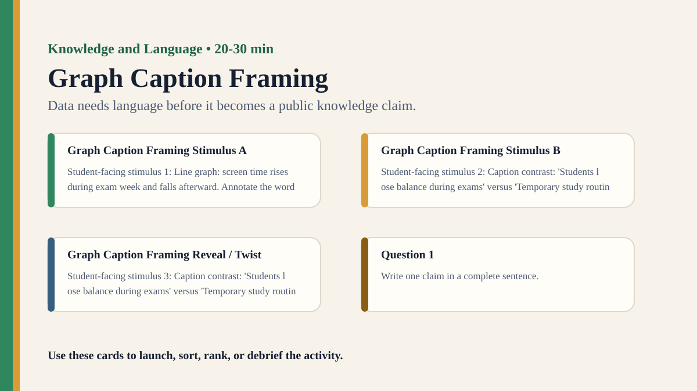

Detailed activity
Graph Caption Framing
Students write different captions for the same graph and analyze how language changes what the data seems to show.
Free classroom activity
Big Idea
Data needs language before it becomes a public knowledge claim.
Teacher Summary
Students see how captions, titles, and labels frame interpretation of quantitative evidence.
Use a simple graph to connect language, mathematics, and public communication.
Materials
- One ambiguous or multi-interpretable graph with axes and data but no title.
- Caption cards: cautious, alarmist, celebratory, skeptical, policy-focused.
Ready to run
Classroom Resource Pack
Use the printable pack for concrete stimulus cards, a student recording sheet, teacher prompts, and a visual prompt image.
Visual Prompt

Student Prompt
Inspect the Graph Caption Framing stimulus. Record one first claim, the evidence you used, your confidence, and what would make you revise.
Actual Lesson Questions
| # | Question for students | Teacher cue |
|---|---|---|
| 1 | Write one claim in a complete sentence. | Teacher cue: look for a clear claim, not just a description. |
| 2 | List two pieces of evidence. | Teacher cue: students should name visible words, data, source features, method features, or contextual clues. |
| 3 | Separate observation from interpretation. | Teacher cue: this is where assumptions, framing, models, or perspective usually appear. |
| 4 | Circle one confidence level and justify it. | Teacher cue: confidence is data for the debrief, not a grade. |
| 5 | Name one piece of missing information. | Teacher cue: push for method, source, context, comparison, or definitions. |
| 6 | Answer using the activity as evidence. | Teacher cue: students should move from the classroom example to a general TOK issue. |
Concrete Stimulus Packet
Stimulus
Framing Card
Neutral: “The school changed the assessment policy.” Loaded A: “The school quietly weakened standards.” Loaded B: “The school modernised assessment.” Loaded C: “The school admitted the old policy was unfair.”
Use this to make wording, implication, and emotional framing visible.Stimulus
Graph Caption Framing Example
Line graph: screen time rises during exam week and falls afterward.
Use this as the activity-specific version of the stimulus.Stimulus
Comparison / Twist Card
Caption contrast: 'Students lose balance during exams' versus 'Temporary study routines shift during assessment week'.
Reveal after students commit to their first judgement.Teacher Key / Reveal
The key move is not the “right answer”; it is the moment students see how data needs language before it becomes a public knowledge claim.
Setup Notes
- Use a graph simple enough that students can understand it quickly.
- Remove the original title and caption so students experience the framing gap.
Ready-to-Use Examples
- Line graph: screen time rises during exam week and falls afterward.
- Caption contrast: 'Students lose balance during exams' versus 'Temporary study routines shift during assessment week'.
Run Resources
- Caption frame cards: cautious, alarming, celebratory, skeptical, policy-focused.
- Graph context checklist: sample, scale, missing variables, time period, comparison group.
Procedure
- Show the graph without title or caption and ask students what it might show.
- Groups write captions in assigned framing styles.
- Students compare how each caption changes interpretation and trust.
- Groups identify what extra context the graph needs.
- Debrief the difference between data, interpretation, and persuasion.
Teacher Language
- The graph is not silent; its labels teach us how to read it.
- What does your caption invite the reader to conclude?
TOK Debrief Questions
- Knowledge question: When does a caption become part of the evidence?
- Can accurate language still mislead?
- What responsibility do communicators have when turning data into claims?
Knowledge Questions
- When does language become part of evidence?
- How can accurate data be framed misleadingly?
- What makes a public knowledge claim responsible?
Sample Student Output
- Our caption was technically true but made the trend sound more permanent than it was.
- Changing the title changed which part of the graph seemed important.
Exhibition Object Idea
The same graph with two contrasting captions placed side by side.
Adaptations
- Support: provide caption sentence starters.
- Challenge: include axis-scale manipulation and ask students to detect it.
Extension Tasks
- Students rewrite a real graph caption to make it more cautious and transparent.
- Connect graph captions to headlines and public policy claims.
Teacher Notes
Use a simple graph so language choices remain the focus.
Ask students to name what each caption adds, removes, or implies.